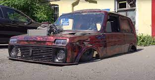

Iling Show
| Name project |
Description |
Photo |
| Gelik from UAZ |
this project in which they make a copy of the G-Wagen from the UAZ. but not an ordinary one, but a very undersized and fast G-Wagon |
|
| loaf |
this project is one of the craziest in the world. an ordinary Soviet truck was lowered and a low roof made. the loaf turned out to be almost twice as large as the original version. |
|
| cornfield texture |
it has such a low cornfield that the engine and wheels do not fit under the hood. had to make holes in the hood to close it. |
 |
| evacuator |
this tow truck was made specifically to carry the cornfield. when the cornfield is on this low tow truck it is lower than the original cornfield. |
|